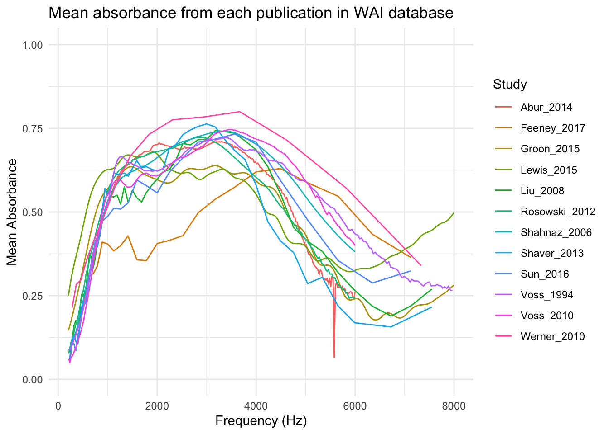
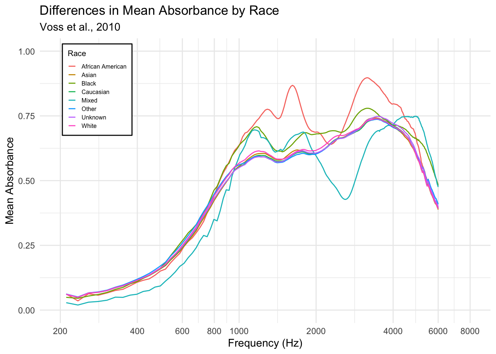
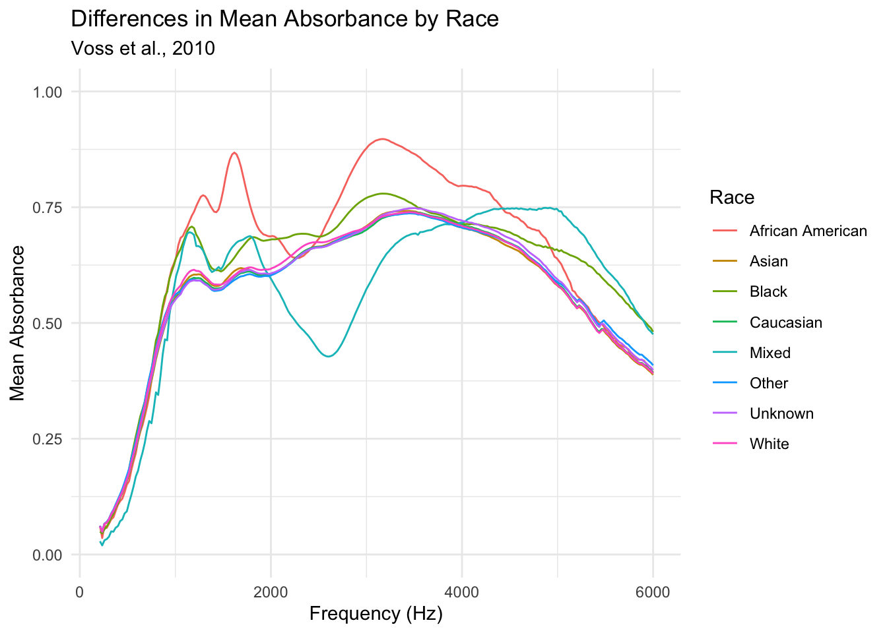

library(mdsr)
library(dbplyr)
library(DBI)Project 4: SQL
Project Description
For this project, I will be using SQL to query Smith College’s Wideband Acoustic Immittance (WAI) Database, which contains WAI ear measurements from a multitude of scientific publications. The WAI Database is available at https://www.science.smith.edu/wai-database/. My goal is twofold. First, I aim to use SQL and ggplot to replicate Figure 1 from Susan Voss’ 2020 study, “An online wideband acoustic immittance (WAI) database and corresponding website”, available at https://pmc.ncbi.nlm.nih.gov/articles/PMC7093226/. Second, I aim to produce a plot showing race differences in frequency versus mean absorption for one specific study in the WAI database (done in 2010 study by Voss et al.).
Data Familiarization
library(RMariaDB)
library(tidyverse)
con_wai <- dbConnect(
MariaDB(), host = "scidb.smith.edu",
user = "waiuser", password = "smith_waiDB",
dbname = "wai"
)
Measurements <- tbl(con_wai, "Measurements")
PI_Info <- tbl(con_wai, "PI_Info")
Subjects <- tbl(con_wai, "Subjects")
# collect(Measurements)SHOW TABLES;| Tables_in_wai |
|---|
| Codebook |
| Measurements |
| Measurements_pre2020 |
| PI_Info |
| PI_Info_OLD |
| Subjects |
| Subjects_pre2020 |
This displays all of the tables that are in the WAI database. Measurements and Subjects will be of particular interest for what I aim to do.
Measurements contains information about each specific study, notably the frequency and absorbance.
SELECT *
FROM Measurements
LIMIT 0, 5;| Identifier | SubjectNumber | Session | Ear | Instrument | Age | AgeCategory | EarStatus | TPP | AreaCanal | PressureCanal | SweepDirection | Frequency | Absorbance | Zmag | Zang |
|---|---|---|---|---|---|---|---|---|---|---|---|---|---|---|---|
| Abur_2014 | 1 | 1 | Left | HearID | 20 | Adult | Normal | -5 | 4.42e-05 | 0 | Ambient | 210.938 | 0.0333379 | 113780000 | -0.233504 |
| Abur_2014 | 1 | 1 | Left | HearID | 20 | Adult | Normal | -5 | 4.42e-05 | 0 | Ambient | 234.375 | 0.0315705 | 103585000 | -0.235778 |
| Abur_2014 | 1 | 1 | Left | HearID | 20 | Adult | Normal | -5 | 4.42e-05 | 0 | Ambient | 257.812 | 0.0405751 | 92951696 | -0.233482 |
| Abur_2014 | 1 | 1 | Left | HearID | 20 | Adult | Normal | -5 | 4.42e-05 | 0 | Ambient | 281.250 | 0.0438399 | 86058000 | -0.233421 |
| Abur_2014 | 1 | 1 | Left | HearID | 20 | Adult | Normal | -5 | 4.42e-05 | 0 | Ambient | 304.688 | 0.0486400 | 79492800 | -0.232931 |
Subjects contains information about the participants in each study, including their age, sex, race and ethnicity.
SELECT *
FROM Subjects
LIMIT 0, 5;| Identifier | SubjectNumber | SessionTotal | AgeFirstMeasurement | AgeCategoryFirstMeasurement | Sex | Race | Ethnicity | LeftEarStatusFirstMeasurement | RightEarStatusFirstMeasurement | SubjectNotes |
|---|---|---|---|---|---|---|---|---|---|---|
| Abur_2014 | 1 | 7 | 20 | Adult | Female | Unknown | Unknown | Normal | Normal | |
| Abur_2014 | 3 | 8 | 19 | Adult | Female | Unknown | Unknown | Normal | Normal | Session 5 not included do to acoustic leak |
| Abur_2014 | 4 | 7 | 21 | Adult | Female | Unknown | Unknown | Normal | Normal | |
| Abur_2014 | 6 | 8 | 21 | Adult | Female | Unknown | Unknown | Normal | Normal | |
| Abur_2014 | 7 | 5 | 20 | Adult | Female | Unknown | Unknown | Normal | Normal |
PI_Info contains information about the authors, year, journal and title of each study in the database. This will be useful for including the primary author and date of publication in the replicated figure legend.
::: {.cell}
SELECT *
FROM PI_Info
LIMIT 0, 5;| Identifier | Year | Authors | AuthorsShortList | Title | Journal | URL | Abstract | DataSubmitterName | DataSubmitterEmail | DateSubmitted | PI_Notes |
|---|---|---|---|---|---|---|---|---|---|---|---|
| Abur_2014 | 2014 | Defne Abur, Nicholas J. Horton, and Susan E. Voss | Abur et al. | Instrasubject variability in power reflectance | J Am Acad Audiol | https://www.ncbi.nlm.nih.gov/pubmed/25257718 | “ |
Purpose: This study investigates test-retest features of power reflectance, including comparisons of intrasubject versus intersubject variability and how ear-canal measurement location affects measurements.
Research design: Repeated measurements of power reflectance were made at about weekly intervals. The subjects returned for four to eight sessions. Measurements were made at three ear-canal locations: a deep insertion depth (with a foam plug flush at the entrance to the ear canal) and both 3 and 6 mm more lateral to this deep insertion.
Study sample: Repeated measurements on seven subjects are reported. All subjects were female, between 19 and 22 yr old, and enrolled at an undergraduate women’s college.
Data collection and analysis: Measurements on both the right and left ears were made at three ear-canal locations during each of four to eight measurement sessions. Random-effects regression models were used for the analysis to account for repeated measures within subjects. The mean power reflectance for each position over all sessions was calculated for each subject.
Results: The comparison of power reflectance from the left and right ears of an individual subject varied greatly over the seven subjects; the difference between the power reflectance measured on the left and that measured on the right was compared at 248 frequencies, and depending on the subject, the percentage of tested frequencies for which the left and right ears differed significantly ranged from 10% to 93% (some with left values greater than right values and others with the opposite pattern). Although the individual subjects showed left-right differences, the overall population generally did not show significant differences between the left and right ears. The mean power reflectance for each measurement position over all sessions depended on the location of the probe in the ear for frequencies of less than 1000 Hz. The standard deviation between subjects’ mean power reflectance after controlling for ear (left or right) was found to be greater than the standard deviation within the individual subject’s mean power reflectance. The intrasubject standard deviation in power reflectance was smallest at the deepest insertion depths.
Conclusions: All subjects had differences in power reflectance between their left and right ears at some frequencies; the percentage of frequencies at which differences occurred varied greatly across subjects. The intrasubject standard deviations were smallest for the deepest probe insertion depths, suggesting clinical measurements should be made with as deep an insertion as practically possible to minimize variability. This deep insertion will reduce both acoustic leaks and the effect of low-frequency ear-canal losses. The within-subject standard deviations were about half the magnitude of the overall standard deviations, quantifying the extent of intrasubject versus intersubject variability.
” |Susan Voss |svoss@smith.edu |24-Aug-2016 |Measurements made on 7 subjects across multiple sessions and 3 probe locations for each subject. Database includes measurements at only the deepest insertion depth (Position 1) and Channel B only. | |Aithal_2013 | 2013|Sreedevi Aithal, Joseph Kei, Carlie Driscoll, and Asaduzzaman Khan |Aithal et al. |Normative wideband reflectance measures in healthy neonates |Int. J. Pediatr. Otorhinolaryngol. |https://pubmed.ncbi.nlm.nih.gov/23047065/ |Objective: Presently, normative wideband reflectance data are available for neonates who have passed a distortion product otoacoustic emission test. However, passing the distortion product otoacoustic emission test alone does not ensure normal middle ear function. The objective of this study was to establish normative wideband reflectance data in healthy neonates with normal middle ear function, as justified by passing a battery of tests.
Method: Wideband reflectance was measured in 66 infants (mean age=46.0 h, SD=21.0, range=13.3-116.5h) who passed a test battery that included high frequency (1000 Hz) tympanometry, acoustic stapedial reflex, transient evoked otoacoustic emissions and distortion product otoacoustic emissions.
Results: The analysis of variance (ANOVA) results showed significant variations of reflectance across the frequencies. There was no significant difference between ears and genders. The median reflectance reached a minimum of 0.21-0.24 at 1-2 kHz, but increased to 0.45-0.59 below 1 kHz and 0.24-0.52 above 2 kHz.
Conclusions: The normative reflectance data established in the present study were in agreement with, but marginally smaller than, those of previous normative studies, except for the Keefe et al. (2000) study. While the use of a test battery approach to ensure normal middle ear function in neonates has resulted in slightly reduced reflectance across most frequencies when compared to studies that have used only otoacoustic emissions, further research is needed to accurately determine the middle ear status of neonates using test performance measures.
|Sreedevi Aithal |Sreedevi.aithal@health.qld.gov.au |2-Jan-2023 | |Background: Wideband acoustic immittance (WAI) studies on infants have shown changes in WAI measures with age. These changes are attributed, at least in part, to developmental effects. However, developmental effects in young infants (0-6 mo) on WAI have not been systematically investigated.
Purpose: The objective of this study was to compare wideband absorbance (WBA) in healthy neonates and infants aged 1, 2, 4, and 6 mo.
Research Design: This was a prospective cross-sectional study. All participants were assessed by using 1-kHz tympanometry, distortion product otoacoustic emission (DPOAE) tests, and WBA tests.
Study Sample Participants included 35 newborns (35 ears), 16 infants aged 1 mo (29 ears), 16 infants aged 2 mo (29 ears), 15 infants aged 4 mo (28 ears), and 14 infants aged 6 mo (27 ears). For each participant, the ears that passed both high-frequency (1-kHz) tympanometry and DPOAE tests were included for analysis.
Data collection and analysis: WBA was recorded at ambient pressure conditions, and the response consisted of 16 data points at 1/3-octave frequencies from 0.25 to 8 kHz. A mixed-model analysis of variance (ANOVA) was applied to the data in each age group to evaluate the effects of sex, ear, and frequency on WBA. WBA was compared between various age groups. In addition, a separate mixed-model ANOVA was applied to WBA data, and post hoc analyses with the Bonferroni correction were performed at each of the 16 data points at 1/3-octave frequencies across age groups to examine the effect of age on WBA.
Results: For all age groups, WBA was highest between 1.5 and 5 kHz and lowest at frequencies of less than 1.5 kHz and greater than 5 kHz. A developmental trend was evident, with both the 0- and 6-mo-old infants being significantly different from other age groups at most frequencies. The WBA results exhibited a multipeaked pattern for infants aged 0 to 2 mo, whereas a single broad peaked pattern for 4- and 6-mo-old infants was observed. The difference in WBA between 0- and 6-mo-old infants was statistically significant across most frequencies. In contrast, the WBA results for 1- and 2-mo-old infants were comparable. There were no significant sex or ear effects on WBA for all age groups.
Conclusions: Developmental effects of WBA were evident for infants during the first 6 mo of life. The WBA data can be used as a reference for detecting disorders in the sound-conductive pathways (outer and middle ear) in young infants. Further development of age-specific normative WBA data in young infants is warranted.
|Sreedevi Aithal |Sreedevi.aithal@health.qld.gov.au |2-Jan-2023 | |Background: Despite the high prevalence of otitis media in Australian Aboriginal infants and children, the conductive mechanism of the outer and middle ear of Aboriginal neonates remains unclear. Differences in characteristics of the conductive pathway (outer and middle ear) between Aboriginal and Caucasian neonates have not been systematically investigated by using wideband acoustic immittance measures.
Purpose: The objective of this study was to compare wideband absorbance (WBA) in Australian Aboriginal and Caucasian neonates who passed or failed a screening test battery containing high-frequency tympanometry and distortion product otoacoustic emissions (DPOAEs).
Research Design: A cross-sectional study design was used. The mean WBA as a function of frequency was compared between Aboriginal and non-Aboriginal neonates who passed or failed the test battery.
Study Sample: A total of 59 ears from 32 Aboriginal neonates (mean age, 51.9 h; standard deviation [SD], 18.2 h; range, 22–86 h) and 281 ears from 158 Caucasian neonates (mean age, 42.4 h; SD, 23.0 h; range, 8.1–152 h) who passed or failed 1000-Hz tympanometry and DPOAEs were included in the study.
Data Collection and Analysis: WBAresults were analyzed by using descriptive statistics and t tests with Bonferroni adjustment. An analysis of variance with repeated measures was applied to the data.
Results: Aboriginal and Caucasian neonates had almost identical pass rates of 61%, as determined by the test battery. Despite the apparently equal pass rates, the mean WBA of Aboriginal neonates who passed the test battery was significantly lower than that of their Caucasian counterparts at frequencies between 0.4 and 2 kHz. The mean WBA of Aboriginal neonates who failed the test battery was significantly lower than that of their Caucasian counterparts who also failed the test battery at frequencies between 1.5 and 3 kHz. Both Aboriginal and Caucasian neonates who failed the test battery had significantly lower WBA values than their counterparts who passed the test battery.
Conclusions: This study provided convincing evidence that Aboriginal neonates had significantly lower WBA values than their Caucasian counterparts, although both groups had equal pass rates, as determined by the test battery. Although the two ethnic groups showed significant differences in WBA, the factors contributing to such differences remain undetermined. Further research is warranted to determine the factors that might account for the difference in WBA between the two ethnic groups.
|Sreedevi Aithal |Sreedevi.aithal@health.qld.gov.au |26-Feb-2023 | |Objectives: The purpose of this study was to evaluate the test performance of wideband absorbance (WBA) in terms of its ability to predict the outer and middle ear status as determined by nine reference standards.
Design: Automated auditory brainstem response (AABR), high-frequency (1000 Hz) tympanometry (HFT), transient evoked otoacoustic emission (TEOAE), and distortion product otoacoustic emission (DPOAE) tests were performed on 298 ears (144 right, 154 left) of 192 (108 males, 84 females) neonates with a mean age of 43.7 hours (SD = 21.3, range = 8.3 to 152.2 hr). WBA was measured from 0.25 to 8 kHz using clicks under ambient pressure conditions. Test performance of WBA was assessed in terms of its ability to identify conductive conditions in neonates when compared with nine reference standards (including four single tests and five test batteries) using the receiver operating characteristic analysis.
Results: The test performance of WBA against the test battery reference standards was better than that against single test reference standards. The area under the receiver operating characteristic curve reached a high value of 0.78 for HFT + TEOAE + DPOAE and AABR + TEOAE + DPOAE reference standards. Within the ears that passed each of the reference standards, there were no significant differences in WBA. However, for the ears that failed each of the test standards, there were significant differences in WBA. The region between 1 and 4 kHz provided the best discriminability to evaluate the conductive status compared with other frequencies.
Conclusions: WBA is a desirable measure of conductive conditions in newborns due to its high performance in classifying ears with conductive loss as determined by the best performing surrogate gold standards (HFT + TEOAE + DPOAE and AABR + TEOAE + DPOAE).
|Sreedevi Aithal |Sreedevi.Aithal@health.qld.gov.au |26-Feb-2023 | |:::
Replicating the Figure from Voss, 2020
SELECT Identifier, Frequency, LOG10(Frequency) AS log_frequency, AVG(Absorbance) AS mean_absorbance
FROM Measurements
WHERE Identifier IN ("Abur_2014", "Feeney_2017", "Groon_2015" ,"Lewis_2015", "Liu_2008", "Rosowski_2012", "Shahnaz_2006", "Shaver_2013" , "Sun_2016", "Voss_1994", "Voss_2010", "Werner_2010") AND Frequency > 200 AND Frequency < 8000
GROUP BY Identifier, Frequency; graph |>
ggplot(aes (x=Frequency, y = mean_absorbance,
color = Identifier,
group = Identifier)) +
geom_line() +
scale_x_log10() +
labs(title = "Mean absorbance from each publication in WAI database",
x = "Frequency (Hz)",
y = "Mean Absorbance",
color = "Study") +
xlim(200, 8000) +
ylim(0, 1) +
theme_minimal()
This plot is not an identical replication of the figure in Voss’ 2020 study, but it is closely similar. It displays frequency versus mean absorbance measurements for the 12 studies included in the WAI database (as of July 2019). The number of unique ears as well as the equipment used in each study is missing from the legend above. This information is included in the figure I am trying to replicate, so it needs to be displayed here.
SELECT p.Identifier, p.Year, p.AuthorsShortList, Frequency,
LOG10(Frequency) AS log_frequency, AVG(Absorbance) AS mean_absorbance,
COUNT(DISTINCT SubjectNumber, Ear) AS ear_u,
CONCAT(AuthorsShortList, " (" , year, ") ", "N=", COUNT(DISTINCT SubjectNumber, Ear), "; ", Instrument) AS legend
FROM PI_Info AS p
LEFT JOIN Measurements AS m ON m.Identifier = p.Identifier
WHERE p.Identifier IN ("Abur_2014", "Feeney_2017", "Groon_2015" ,"Lewis_2015", "Liu_2008", "Rosowski_2012", "Shahnaz_2006", "Shaver_2013" , "Sun_2016", "Voss_1994", "Voss_2010", "Werner_2010") AND Frequency > 200 AND Frequency < 8000
GROUP BY Identifier, Instrument, Frequency;plot2 |>
ggplot(aes(x = Frequency, y = mean_absorbance,
color = legend,
group = legend)) +
geom_line() +
scale_x_log10() +
labs(title = "Mean absorbance from each publication in WAI database",
x = "Frequency (Hz)",
y = "Mean Absorbance",
color = "Study, No of individual ears, Equipment") +
xlim(200, 8000) +
ylim(0, 1) +
theme_minimal() +
theme(legend.text = element_text(size = 6),
legend.title = element_text(size = 8))
This plot is identical to the previous one, except that the legend now includes the number of unique ears and the equipment used in the study.
Race Differences in Mean Absorbance
SELECT s.Race, m.Frequency, AVG(m.Absorbance) AS mean_absorbance
FROM Subjects AS s
RIGHT JOIN Measurements AS m ON s.SubjectNumber = m.SubjectNumber
WHERE m.Identifier = "Voss_2010" AND m.Frequency > 200 AND m.Frequency < 8000
GROUP BY s.Race, m.Frequency;head(groups_graph) Race Frequency mean_absorbance
1 African American 210.9375 0.06189557
2 African American 234.3750 0.03557816
3 African American 257.8125 0.06311273
4 African American 281.2500 0.05740714
5 African American 304.6875 0.06617098
6 African American 328.1250 0.07566153groups_graph |>
ggplot(aes(x = Frequency, y = mean_absorbance)) +
geom_line(aes(color = Race)) +
scale_x_log10() +
labs(title = "Differences in Mean Absorbance by Race",
subtitle = "Voss et al., 2010",
x = "Frequency (Hz)",
y = "Mean Absorbance",
color = "Race") +
xlim(200, 6000) +
ylim(0, 1) +
theme_minimal()
I chose to look at differences in mean absorbance for each frequency band by race in one specific study conducted by Voss et al. in 2010. I chose this study because of its large number of participants (1984), which should help to make trends in the data more clear. Each line represents a different race included in the study. It can be seen from the graph that mean absorbance follows very similar trends for White, Caucasian and Asian participants. Meanwhile, the mean absorbances for African American, Black and Mixed participants are noticeably different from those of the other races. Notably, African American participants tend to have a higher mean absorbance for the same frequencies than the other races included in the study, especially for frequencies between 1000 Hz and 5000 Hz. Mixed participants tend to have lower mean absorbances than the other races in the study for frequencies between 2000 Hz and 4000 Hz.
Conclusion
In this project I used SQL queries to obtain the necessary information from the relevant tables in the WAI database (Subjects, Measurements and PI_Info). These SQL queries enabled me to save the data as R objects, from which I could produce graphs using ggplot. I was able to closely replicate Figure 1 from Voss’ 2020 study, and I also produced a graph that showed clear race differences in mean absorbance for Voss et al.’s 2010 study.